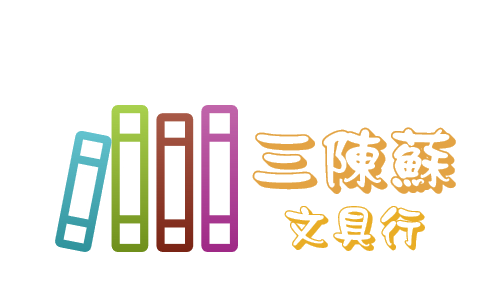

陳品如
「高峰只對攀登它而不是仰望它的人來說才有真正意義。」
♀ 我來自高雄，小時候則是在台南長大國小才搬到高雄， 是個樂觀開朗善解人意的人，喜歡運動健身但上了大學 太愛吃了導致胖了六公斤:)
【中原大學-資訊管理學系】


My Skills
HTML
70%
CSS
70%
JavaScript
50%
Jave
60%
工作經驗
Work Experience
補習班輔導老師、家教:國中數學 物理 化學
sogo象印的周年慶
麗嬰國際玩具特賣會 擔任:收銀組長
巴豆妖豆花
課程專案
✨讓人與物皆得重生✨
與『木匠的家 關懷學會』合作，所得將全數交給協會，幫助弱勢及身心障礙者。而我們所販售的商品均為廢棄再利用的再生木，經由木匠的巧手，重新打造出獨一無二的商品。

因為組員四位裡面有兩位姓陳，最後我們決定最後取三陳蘇為我們購物網站的LOGO。 第一次運用程式後端並結合資料庫做出屬於自己的購物網站，在寫程式過程中遇到很多瓶頸。不過也幸好有一群carry的同學讓我們完成第一個網頁作品。
大二下學期期中小專案，由於我剛好是美食研究社社長，所以我們最後決定以我們社團為主題來介紹中原並把我們社團推廣出去。我主要是負責剪片的工作。
社團經歷
Club Experience
中正高中星藍康輔社
高中時期參加這個團康性質社團，學會如何帶活動也因為
這個機會讓以前害怕上台的我敢上台放開來玩。
資管系學會
到大二，進入了資管的系學會，辦活動真的很辛苦即使有好有壞，大家
一起辦活動的感覺很棒。在上學期我接了資管之夜的總協,當活動總協真
的很不容易，要跑很多流程還要注意進度表與提醒各個班級並經營粉專。
不過也感謝股員們的幫忙及幹部們的指導。
資管系女籃
因為喜歡打籃球，上大學後參加了資管系女籃，裡面的學姊人都很好
大家都是一群很熱愛籃球的夥伴，跟著大家一起進步一起打球一起出外參
加比賽，很開心能進來這麼如此溫暖的球隊。